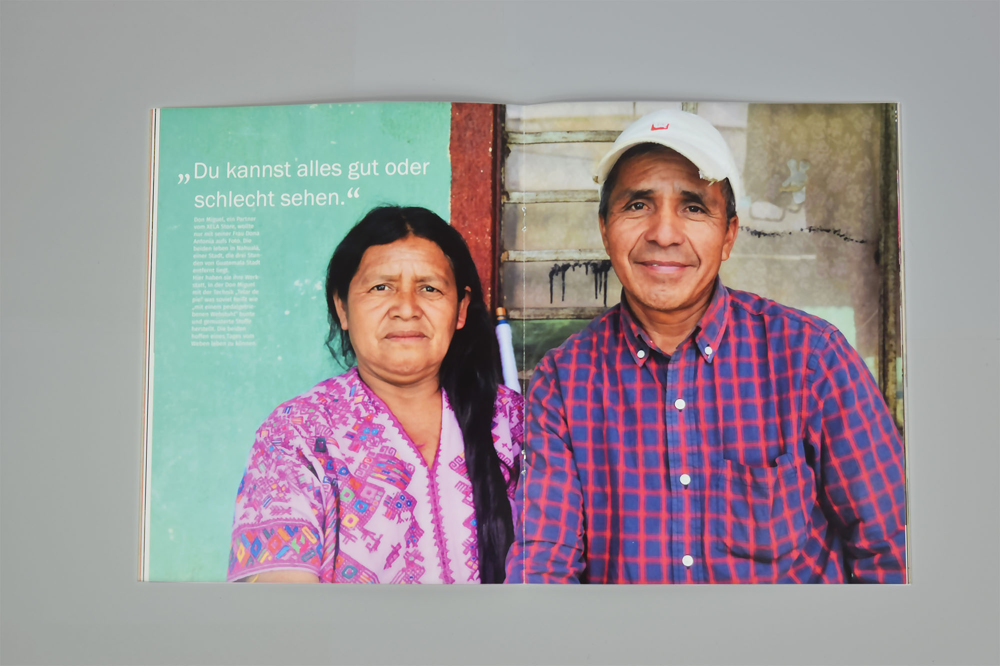
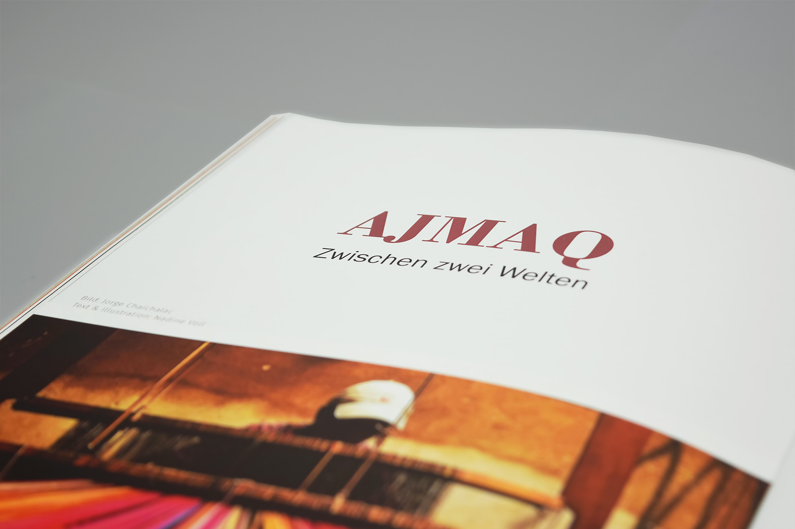

- ENTER ist eine Magazin für Studierende der Hochschule Bremerhaven. Der Titel Enter soll einerseits den Leser zum Öffnen des Magazins auffordern (engl. betreten) und andererseits den Bezug zur See herstellen (engl. ein Schiff einnehmen).
- Herausforderungen
- Ziel war es ein spannendes Magazin für Studierende mit interessanten Themen zu erarbeiten. Dabei haben sich ganz unterschiedliche Themen ergeben, die in einem zusammenhängenden Magazin dargestellt werden mussten.
- Lösungsansatz
- Eine bunte Gestaltung, großflächig angelegte Fotografien und eine variable Satzgestaltung sollen das Interesse des Lesers wecken.
- Auftrag: Satz und Gestaltung eines Magazins
- Entstehung: Studentische Gruppenarbeit
- Datum: August 2017

